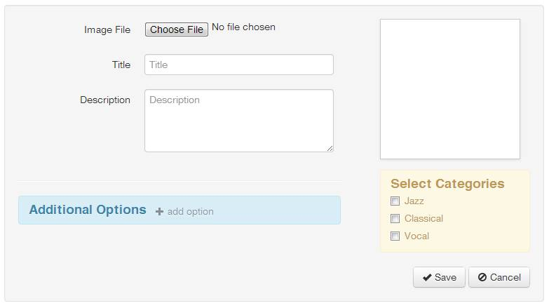
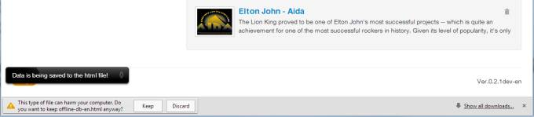

What is offlineDB
The offlineDB is an HTML app that allows you to keep a catalogue/database of your books, movie, music albums, etc. It supposed to run offline in your browser. Consider it to be a desktop app that has .html instead of .exe extension. Of course it's not gonna be as flexible as a desktop application, but you will be able to browse your catalogue on any device that has a web browser.
If you're looking for a simple cataloging solution that will work virtally anywhere, then offlineDB could be your best choice. Try it now: click on the link, add some info to it, click "save data to html" option to download the file. In case you want to try offlineDB with the demo data click here.
Unlike other desktop catalogue managers (like: readerware or collectorz.com) offlineDB stores records in the very same HTML file. In other words: the javascript logic to browse and edit the records, user data and images all go to the single HTML file. Now you can share this file over the email, or save it on the internet.
Overview
This is how the offlineDB's main screen looks like (note: the screenshot shows the database with sample data):
The functionality is quite simple: search thru your database using searchbar in top nav panel, use categories in the sidebar to navigate thru the DB records, click on the record to it's details.
To edit/update your database you have to switch to the edit mode by clicking on "edit" button next the the search bar:
Now the offlineDB will go into edit mode. You'll see additional controls appear in the page.

The top nav will also change, and now have the edit menu drop down with options to load and save your database.

Options to load/save to browser's local storage and options to load/save in the page's html code.
Since the webpages have very limited access to a computer's file system the offlineDB can't save files directly. Instead it will create it's copy and will ask you to download the new file with the updated data.

In case you'll need to move your database to a new offlineDB version you can store your database to the localstorage and re-load it from localstorage in the new offlineDB file.